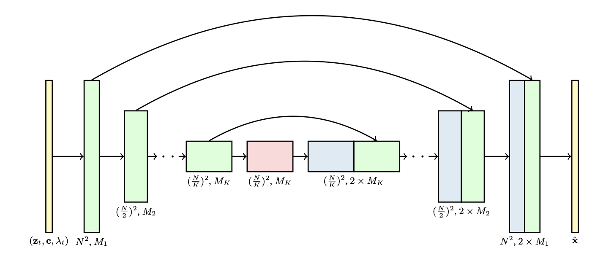
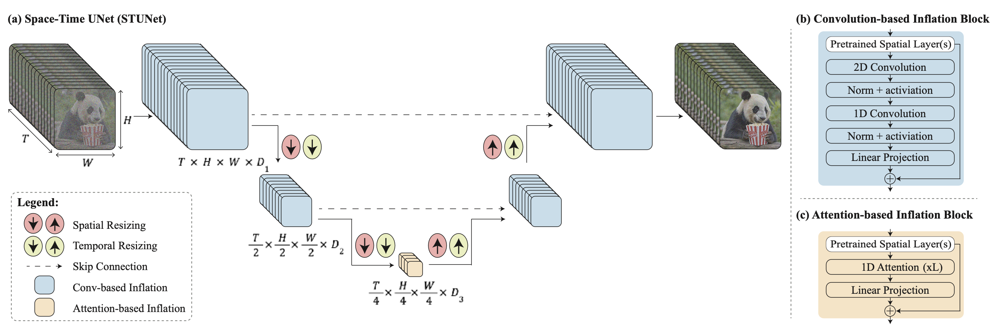
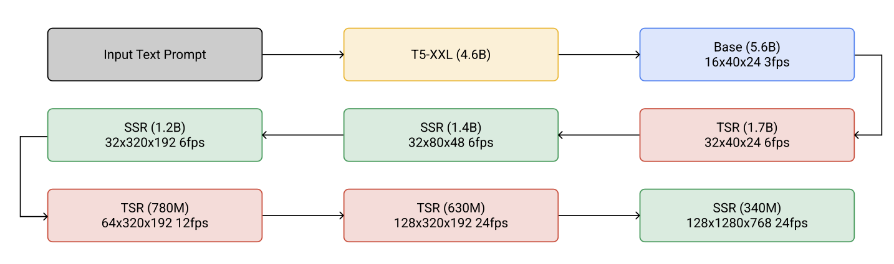
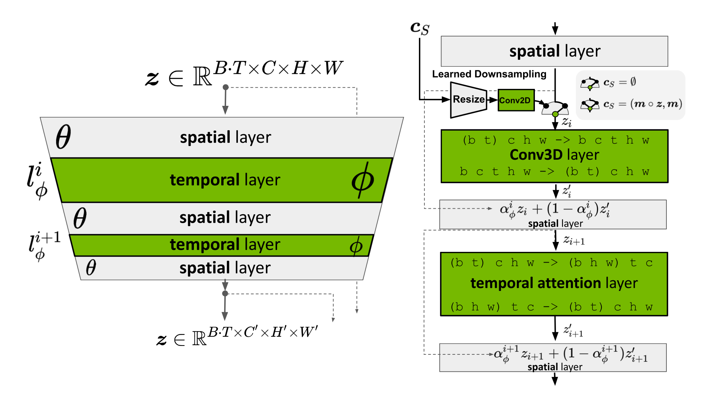
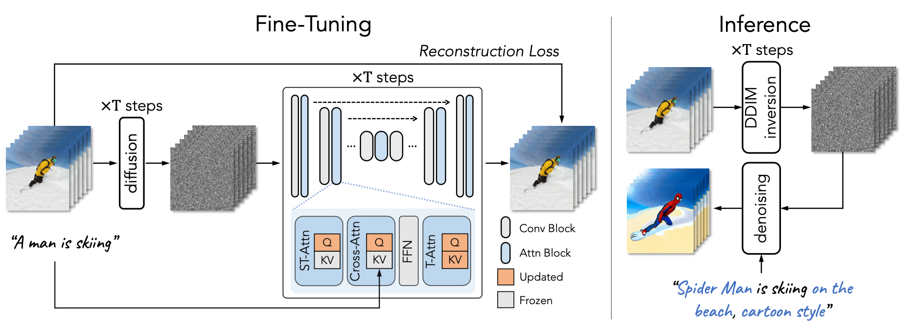

Diffusion Models for Video Generation
- Why video generation is harder than image generation
- Diffusion parameterization and sampling
- Architectures for spatiotemporal generation
- Scaling text-to-video systems
- Latent video diffusion
- Adapting image diffusion models to video
- Practical synthesis
1. Why video generation is harder than image generation
Video generation inherits the visual fidelity challenge of image generation and adds temporal consistency, motion modeling, long-range dependencies, and much larger compute cost. A useful reading path starts from diffusion models that treat video as a spatiotemporal object, then moves to architectures and adaptation methods that make this objective tractable.
2. Diffusion parameterization and sampling
Video diffusion models extend the image diffusion recipe: add noise to clean video clips, then learn a reverse denoising process. The same design choices remain central, including whether the model predicts noise, clean data, or velocity. Velocity prediction is especially useful as systems scale, because it stabilizes training and sampling across different noise levels.

3. Architectures for spatiotemporal generation
A video model must mix information across space and time. Early designs naturally extend U-Net blocks into 3D U-Nets, replacing purely spatial operations with spatiotemporal ones. Later systems use factorized temporal layers, space-time U-Nets, or transformer-style blocks to balance quality and compute.


4. Scaling text-to-video systems
Large text-to-video systems combine a diffusion backbone with text conditioning and often a cascade of spatial or temporal super-resolution modules. Imagen Video and Make-A-Video illustrate two central scaling paths: high-definition cascaded generation and using image-text data plus unlabeled video to reduce the need for paired text-video data.


5. Latent video diffusion
Pixel-space video diffusion is expensive. Latent video diffusion moves generation into a compressed representation, reducing memory and compute while retaining enough visual structure for high-quality synthesis. This mirrors the role latent diffusion played for images, but with stronger pressure from the temporal dimension.

6. Adapting image diffusion models to video
A second mainline adapts strong image diffusion models rather than training video generators entirely from scratch. Tune-A-Video fine-tunes an image model for one-shot text-to-video generation, while Text2Video-Zero shows that training-free temporal constraints can turn image diffusion into zero-shot video generation.


7. Practical synthesis
Main takeaway: video diffusion progress comes from three linked choices: a stable diffusion parameterization, a spatiotemporal architecture, and a compute-efficient adaptation or latent representation.
References
- Cicek et al. (2016). 3D U-Net: Learning Dense Volumetric Segmentation from Sparse Annotation.
- Ho and Salimans et al. (2022). Video Diffusion Models.
- Ho et al. (2022). Imagen Video: High Definition Video Generation with Diffusion Models.
- Singer et al. (2022). Make-A-Video: Text-to-Video Generation without Text-Video Data.
- Blattmann et al. (2023). Align your Latents: High-Resolution Video Synthesis with Latent Diffusion Models.
- Wu et al. (2023). Tune-A-Video: One-Shot Tuning of Image Diffusion Models for Text-to-Video Generation.
- Khachatryan et al. (2023). Text2Video-Zero: Text-to-image diffusion models are zero-shot video generators.
- Bar-Tal et al. (2024). Lumiere: A Space-Time Diffusion Model for Video Generation.